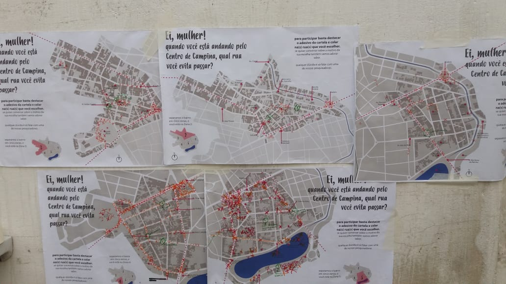

©2017 LabRua
Template: Bootstrapious
+ Kishan B

Mulheres da Periferia: por onde andam
As diferenças sociais têm forte impacto na maneira com que as cidades são construídas ao longo do tempo, contribuindo, muitas vezes para segregação de alguns grupos, e isso acontece, por exemplo, as diferenças existentes entre homens e mulheres.
Por muito tempo somente o homem branco tinha a chance de ter vida social, usufruir livremente do espaço público das cidades e de todas as trocas e vivências que ele oferece. Excluídas da vida pública, as mulheres eram destinadas à vida privada, da casa, e à mercê das obrigações domésticas. Assim, as cidades, por muito tempo - e por que não dizer até hoje – foram concebidas e planejadas por homens e para homens, produzindo um espaço público que não é neutro na sua organização e tem forte tendência de gênero.
Mapa utilizado para um levantamento no Centro de Campina Grande - PB
Yona Kaluaná, 2020.
Dessa forma, as mulheres estão mais vulneráveis à circulação, estando sujeitas a violências em diferentes níveis, e não há como falar em combate à violência ou desigualdade de gênero sem levar em consideração o cenário onde esses conflitos acontecem: o espaço urbano. Sendo a Paraíba um dos estados que mais mata mulheres segundo dados levantados em 2015, a pesquisa busca compreender quais características físico-espaciais e os fatores morfológicos que condicionam a vida das mulheres no bairro do Cinza.
Questionar o modo como nos relacionamos com o espaço pode colaborar para a diminuição das diferenças sociais. É necessário ressignificar a construção de nossas cidades, tratando da nossa maneira de habitar o mundo urbano e de como nós experimentamos o cotidiano. Adequar algumas características urbanas de nossas cidades, a partir de um espaço público mais inclusivo e seguro para todos pode permitir novas formas de uso e vivência.
Análises produzidas nessa pesquisa
A pesquisa se encontra em estágio inicial, as análises estão sendo realizadas
.